| |
|
SANAT YAPISI ELEMANLARI
|
Bu menüye Düşey Güzergah > Eklentiler > Sanat Yapısı Elemanları yolundan veya Düşey Güzergah'ta bulunan Sanat Yapıları menüsünden, aşağıdaki resimde gösterilen ikon aracılığıyla erişebiliriz. Bu araçlar karayolları ve demiryolları için mevcuttur. 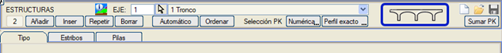
Bu menüde aşağıdaki sekmeler ayırt edilir: TABLİYELER, KİRİŞLER, ORTA AYAKLAR, KENARAYAKLAR, KANAT DUVARLARI. Projenin tamamı için bir eleman listesi oluşturulur ve bu liste bir .ede dosyasına kaydedilir. Aşağıdaki dosyaların adları, tüm eksenlerin genel hesaplamasının yapıldığı PROJE sekmesine yansıtılır.
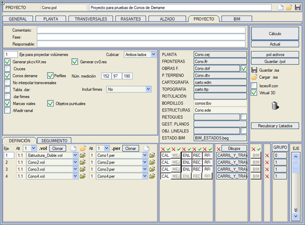
Tabliyeler ve Tabliye Editörü Her bir tabliye tipinin geometrisi, kütüphaneden .eet dosyalarından yüklenir. Kütüphaneye birkaç örnek eklenmiştir. Bu dosyalar TABLİYE EDİTÖRÜ'nden tanımlanabilir ve/veya değiştirilebilir. Üç noktalı kutucuk ile farklı kütüphanelere kaydetme imkanı vardır. Çizgi tipi, enkesitlerde temsil edileceği çizgi tipini tanımlar. Metraj, metrajın raporlara (cvol.res, vb.) eklenip eklenmeyeceğine karar verir. Metraj Adı, bu metrajın raporlardaki adını tanımlar. Her biri için farklı çizgi tipi ve metraj adı kullanarak farklı tabliye tiplerinin metrajını ayırt etmek mümkündür. Malzeme, BIM modelinde temsil edilmesi için malzemeyi tanımlar. 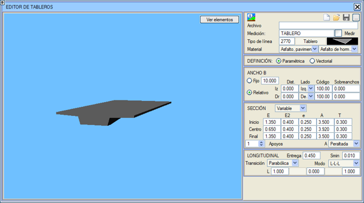
Tabliyeler için iki tanım seçeneği mevcuttur: Parametrik veya Vektörel. Parametrik tanımda, açıklayıcı model yardımıyla tabliyenin boyutlarını sayısal olarak belirleriz: 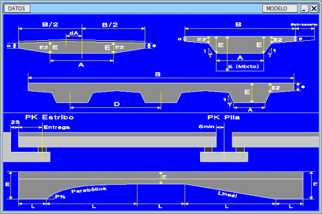
Genişlik: tabliyenin B genişliği, ya sabit bir B boyutu olarak ya da kod, taraf ve koda olan mesafe ile verilen bir noktaya göreceli bir ölçü olarak belirlenir. Aynı şekilde her bir taraf için bir ek genişlik tanımlanabilir. e kalınlığının değeri, kenarın orijinal tanım noktasında korunur, bu nedenle ek genişliğin sonunda bu kalınlık daha az olabilir. Enkesit: üç moddan biriyle belirlenir: Sabit (sabit boyutlarla), Değişken (tabliyenin başlangıcında, ortasında ve sonunda farklı boyutlarla) veya Karma. Karma kesit, sabit kesit gibidir (E2, e, A ve T sabit) ancak tabliye uzunluğu boyunca E kalınlığının bir geçişine izin verir; bu geçiş, sabit kesitten dikey bir kesimle çözülür. Ayrıca, tabliyenin enine olarak sahip olacağı mesnet sayısı ve A boyutunun yatay mı yoksa devere göre mi değişeceği de tanımlanabilir. 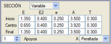
Boyuna: üç mod ayırt edebiliriz.
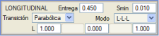
Vektörel tanımda, tabliyenin enkesit şekli, sayısal olarak veya grafiksel olarak, bir grafik penceresinde çizilerek ve örneğin içinde boşluklar tanımlanarak serbestçe tanımlanır. Ek olarak, üç parametre tanımlanmalıdır: mesnet sayısı, bindirme payı uzunluğu ve Smin (tabliye kenarından orta ayak kilometresine veya kenarayak kenarına kadar olan uzunluğu belirler). Değişken kesitli vektörel tabliyeler için, başlangıçta, ortada ve sonda farklı bir kesit tanımlamamız gerekir. Kesitler, aralarında geçiş yapabilmek için aynı sayıda noktaya sahip olmalı ve bu noktalar eşdeğer olmalıdır. Boşlukları olabilir. Kütüphaneye, bu konsepti kullanan, başlangıçta ve sonda daha büyük kalınlıkta bir kesit ve orta için daha küçük kalınlıkta başka bir kesit içeren CANTO_VARIABLE_VECTORIAL.eet tabliyesi dahildir. Aralarında parabolik bir geçiş yapar. Tip Kesit > SANAT YAPILARI menüsünde, her bir viyadük için kullanılmak istenen tabliye tipi belirtilebilir. 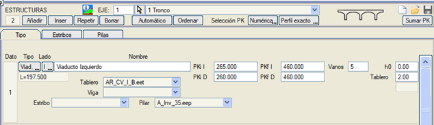
.lil Düzenle (Düşey Güzergah) diyalog kutusunda, BORDÜRLER, TABLİYELER,... sekmesinde, tabliyeyi temsil eden L. ve T. çizgileriyle 3B tel kafes modelini çizme imkanımız vardır. Bir yapıda bu tür bir tabliye tanımlandığında, tabliyenin özel noktalarında enkesitler enterpole edilir. Ayrıca, değişken kesitli ise, tüm yapıda her metrede bir enkesit enterpole edilir. Kütüphane içinde, sağ ve sol platformlar için bağımsız tabliyeler, kirişler ve orta ayaklara sahip otoyol viyadüklerinde kullanılmak üzere S5A_BH_I.eet, S5A_BH_D.eet, AR_CV_D.eet ve AR_CV_I.eet tabliyeleri örnek olarak sunulmaktadır. (Sağ taraf için bir yapı ve sol taraf için başka bir yapı). Kirişler ve Kiriş Editörü Kütüphanede bir dizi kiriş örneği dosyası bulunmaktadır. KİRİŞ EDİTÖRÜ'nde bunlar değiştirilebilir veya yenileri oluşturulabilir. Kiriş, enkesitiyle tanımlanır, güzergaha uyum sağlayabilir, düz olabilir veya sabit bir yarıçapa sahip olabilir. (Mevcut revizyonda sadece güzergaha uyum sağlarlar). Üç noktalı kutucuk ile farklı kütüphanelere kaydetme seçeneği. 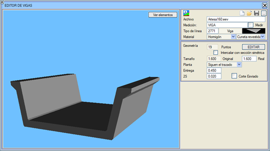
Sanat yapıları diyalog kutusunda, tabliye tipinin yanında kiriş tipi de tanımlanabilir. Kirişler sadece sabit kalınlıklı tabliyelere yerleştirilir. Kiriş, tabliyenin her bir mesnetinin merkezine yerleştirilir ve tabliyenin mesnetleri yatay ise deverli veya deversiz olabilir. Birden fazla kirişe sahip tabliyelerde, Simetrik kesitle araya ekle kutucuğu etkinleştirilerek simetrik kirişlerin aralara birer birer yerleştirilmesi mümkündür. Örn:
.lil Editörü > Bordürler, Tabliyeler... menüsünde, kirişlerin 3B tel kafes modelinin de çizilmesi belirtilebilir. 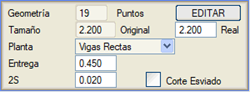Düz Kirişler: Kurplu bir yapıda düz kirişler kullanma imkanı. Bu seçenekle, tabliyenin mesnetleri de kirişin planını takip etmek için kaydırılır. Aynı şekilde, orta ayaklar da güzergah eksenine göre kaydırılır. Kurulumla birlikte bir VigasRectas örneği dahil edilmiştir.  Orta Ayaklar ve Orta Ayak Editörü Kütüphanede, orta ayakların tanımını içeren .eep dosyalarından bazı örnekler bulunmaktadır. Bu dosyalar ORTA AYAK EDİTÖRÜ'nde değiştirilebilir veya yenileri oluşturulabilir. Üç noktalı kutucuk ile .eep dosyalarını farklı kütüphanelere kaydetme seçeneği. Her bir orta ayak, aşağıdaki bölümlerden bir veya ikisinden oluşabilir:
Bindirme payları arasındaki kalınlık değişimi: Bitişik açıklıkların kirişleri belirgin şekilde farklı kalınlıklara sahip olduğunda, takozların (mesnetlerin) yüksekliğini azaltmak için tasarlanmış olan başlık kalınlığını bindirme payları arasında değiştirme imkanı sağlanır. 0 yüksekliğinde bulunan yatay yüzeyler (üzerine takozların veya kirişlerin oturduğu) belirtilen ölçüde yükseltilir.
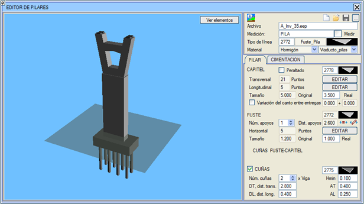
Bu ikon aracılığıyla orta ayakların konumunu belirleyebilirsiniz. Orta ayakları farklı mesafelere yerleştirme imkanı sağlanır: 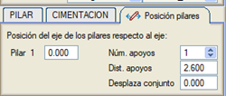 ikonu aracılığıyla orta ayaklar eşit olarak dağıtılır. Takozlar kutucuğu etkinleştirilerek, orta ayak tanımına kirişler veya tabliye için mesnet takozları eklenebilir. Takoz oluşturma boyutları aşağıdaki ekli şekilde kontrol edilebilir. Istram kütüphanesinde tanımlanan orta ayakların birçoğu çeşitli takoz tipleri içerir. Eğer başlık deverli olarak tanımlanırsa (ilgili kutucuk etkinleştirilerek), başlık kirişi deverle birlikte dönecek, böylece birden fazla kiriş varsa, takozları eşit olacaktır. Editörde bunu başarmak için gövde-başlık takozları tanımlanabilir. Yapılmazsa, gövdeler değişken yüksekliğe sahip olacak ve üst yüzeyleri başlığın deverini alacaktır. Birden fazla gövde varsa, gövdeleri deverli bölgelerde farklı yüksekliğe sahip olmaya zorlamak ve böylece gövde-başlık takozlarını en aza indirmek için H kutucuğu da etkinleştirilebilir. 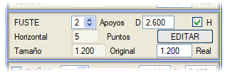
Bu deverli orta ayakların örneklerini, kurulumun DEMO klasöründe bulunan Dintel_peraltado.isa örneğinde görebiliriz. Bir yapı için orta ayakların geometrisi tanımlandığında, sanat yapısı elemanları tablosuna göre, orta ayak, deverli olabilen tabliyenin veya kirişin mesnet tabanının orta noktası dikkate alınarak merkezlenir. Bu konuma, her bir orta ayak için tanımlanan eksene olan mesafe eklenecektir (sıfırdan farklı bir kilometre verilirse veya son orta ayakta). Ayrıca her bir orta ayak için tanımlanan şevk açısı da uygulanacaktır. Son olarak, orta ayaklar ve kenarayaklar için bir temel ve bir kazık matrisinden oluşan bir temel de tanımlanabilir. Bu tür bir temel, kurulumun DEMO klasöründe bulunan Estructura_doble.isa örneğine dahil edilmiştir. Orta Ayak temellerinin kazıklarına, enine ve boyuna düzlemlerde düşeye göre maksimum bir eğim açısı PA tanımlanabilir. Kazıklar daha sonra yelpaze şeklinde düzenlenir, öyle ki temel merkezinde dikey olurlar ve kenarlarda maksimum açıya ulaşırlar. Demo/Estructuras klasöründe kurulan Estructura_Doble.isa örneğinde, bazı elemanlarda bu eğik kazıklar tanımlanmıştır. 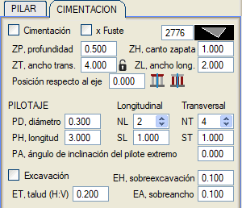
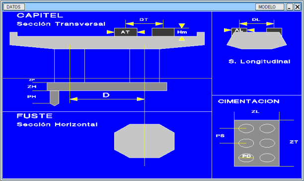
Temelin ötelenmesi:
Her bir orta ayak için tanımlanabilir: ZP: gövdenin tabanının (temel başlığının) mutlak kotu. Eğer 0'dan farklı bir değer verilirse, bu değer kullanılır ve Sanat Yapısı Elemanları tanımında verilen temelin araziye göre derinliği zp değeri ve orta ayak tanımında verilen gövde yüksekliği H değeri göz ardı edilir. (Aynı kota sahip birden fazla orta ayak varsa, bu değeri 100 numaralı orta ayak verisine girmek yeterlidir). 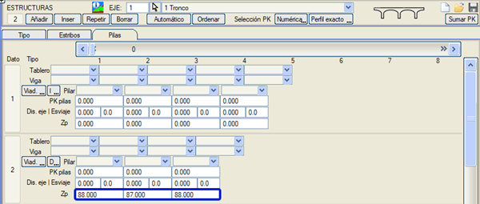
Temel boyutlarının, şevk etkisinden etkilenmeyecek şekilde kilitlenmesine izin verilir. Orta ayak düzenleme menüsünde, enine genişliğin yanında iki konuma sahip bir kilit gösterilir:
Sanat yapıları diyalog kutusunda, her bir viyadük için tabliye, kiriş ve orta ayak tipi, ilgili tablodakiler arasından seçim yapmayı sağlayan bir açılır menü aracılığıyla tanımlanabilir. 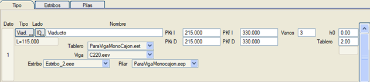
Orta ayağın enkesiti, orta ayak kilometresine sahip enkesitlerde ve (S+Bindirme Payı)'na eşit veya daha küçük bir mesafede olanlarda oluşturulur. Orta Ayağın Enine Ekseni, deverli enkesitlerde tabliyenin veya kiriş tabanının orta noktasını aradığı için, kesitin geometrik ekseniyle çakışmayabilir. Ayrıca, kırmızı kotlar menüsünde ve boykesit çiziminde boyuna kesiti de oluşturulur. Yapılarla ilişkili orta ayaklar, tel kafes modelinde (.lil) ve ayrıca BIM'de, Virtual 3D'de olduğu gibi zaten oluşturulur. Kenarayaklar ve Kenarayak Editörü Kenarayak listesi ekleme imkanı. Kütüphaneye bazı basit kenarayak örnekleri eklenmiştir. 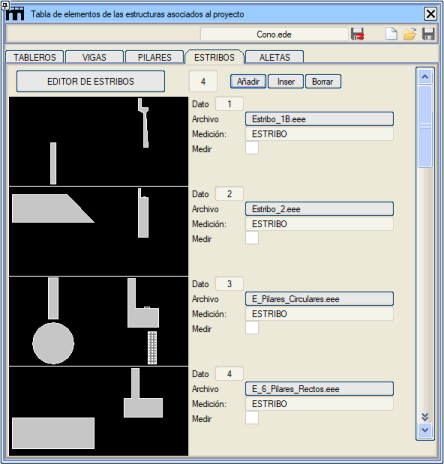
KENARAYAK EDİTÖRÜ'nde yeni kenarayak geometrileri oluşturulabilir veya mevcut olanlar değiştirilebilir. Kenarayaklar içinde Başlık ve Parapet kısmı, Gövde, Takozlar ve Temel ayırt edilir. Orta ayaklarda olduğu gibi, bir temel ve bir kazık matrisinden oluşan bir temel tanımlanabilir. Bu temelde, temel boyutlarıyla (ZP, ZH, ZT ve ZL) veya kazıkların miktarı, boyutu ve boyutlarıyla (ST, SL, PD, PH, NT ve NL) ilgili olarak tanımlanabilen bir dizi parametre vardır. Ayrıca, temelin boyuna (dL - yapıya doğru pozitif, dolguya doğru negatif) veya enine (dT - dolgudan bakıldığında: sağa doğru pozitif, sola doğru negatif) yönde merkezden kaçıklık mesafeleri de tanımlanabilir. Bu tür bir temel, kurulumun DEMO klasöründe bulunan Estructura_doble.isa örneğine dahil edilmiştir. Ayrıca, orta ayaklarda olduğu gibi, başlığın deverli olması tanımlanabilir ve gerekli deveri elde etmek için (isteğe bağlı olarak) gövde-başlık takozları eklenebilir. Gövde'de, H parametresinde bir yükseklik tanımlanabilir. Eğer parametre 0 olarak bırakılırsa, gövdenin yüksekliği, temel derinliğinden arazi yüzeyine kadar otomatik olarak belirlenir. Üç noktalı kutucuk aracılığıyla farklı kütüphanelere kaydetme seçeneği.  Şevksiz Kenarayaklı viyadükler için, hesaplama alanı şu şekilde tanımlanırsa: [Evet->(KM'ler)], o zaman dolgu, kenarayak parapetinin arka yüzüne kadar geri çekilir. (Tabliyeler ve kirişler de her birinin tanımladığı Bindirme Payı değerine göre kenarayak kilometresini aşar). Şevkli Kenarayaklarda, kenarayak kesitini şevkli eksenini takip ederek koruduğu için daha büyük bir miktar geri çekildiği dikkate alınmalıdır. 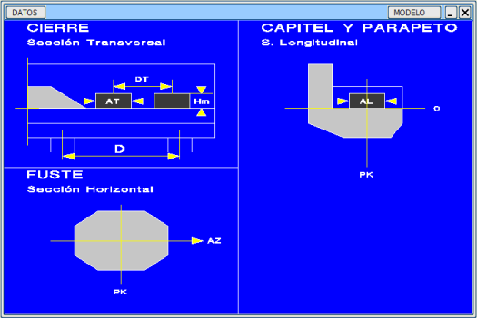
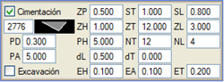Kenarayak temellerinin kazıklarına, enine ve boyuna düzlemlerde düşeye göre maksimum bir eğim açısı PA tanımlanabilir. Kazıklar daha sonra yelpaze şeklinde düzenlenir, öyle ki temel merkezinde dikey olurlar ve kenarlarda maksimum açıya ulaşırlar. Demo/Estructuras klasöründe kurulan Estructura_Doble.isa örneğinde, bazı elemanlarda bu eğik kazıklar tanımlanmıştır. Gövdenin tabanı (temel başlığı) için başlangıç kenarayağı ve bitiş kenarayağı için bir Zp mutlak kotu tanımlanabilir. Burada sıfırdan farklı bir değer girilirse, bu kot kullanılır ve kenarayak tipi tanımında bulunan temelin derinliğini tanımlayan zp değeri ile gövdenin H yüksekliği göz ardı edilir. 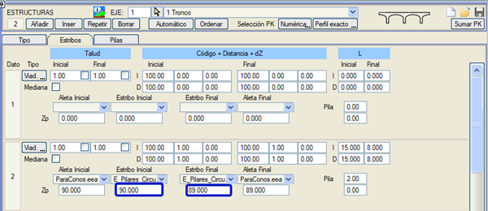
Sanat Yapıları diyalog kutusunda, her bir viyadük için listeden bir kenarayak seçilebilir. Kanat Duvarları ve Kanat Duvarı Editörü Kütüphanede bir dizi kanat duvarı örneği dosyası bulunmaktadır. KANAT DUVARI EDİTÖRÜ'nde bunlar değiştirilebilir veya yeni varyantlar oluşturulabilir. Üç noktalı kutucuk aracılığıyla farklı kütüphanelere kaydetme seçeneği. Kanat duvarı editörü menüsünde, KANAT DUVARI tanım kutucuğu ile TEMEL tanım kutucuğu farklı sekmelerde ayırt edilir. 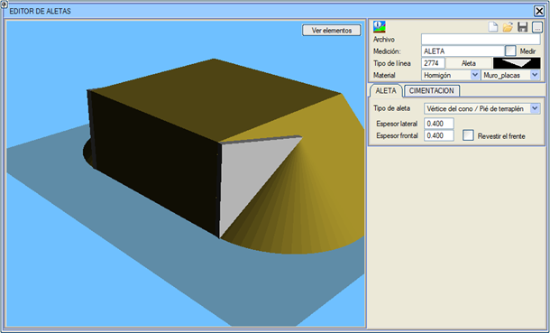 Kanat duvarı editöründe, kanat duvarının yönü, kalınlığı, yan uçlarının açıları ve kanat duvarının ön yüzünü kaplayıp kaplamayacağımız gibi bir dizi geometrik parametre ve temelinin parametreleri tanımlanabilir. Ön kalınlıktan farklı bir yanal kalınlık tanımlama imkanı. Koni tepe noktası/Dolgu topuğu ve Şevk + Açı + Yarıçap tipi kanat duvarlarında. DEMO klasöründe verilen Estructura_Doble.isa örneğinde, sağ taraftaki viyadüğe kenarayaklar tanımlanmıştır. Kenarayaklar şu şekilde gösterilecektir:
Sanat Yapıları diyalog kutusunda (Kenarayaklar Sekmesi), başlangıç Kanat Duvarı tabanı için bir Zp mutlak kotu ve bitiş kanat duvarı için başka bir kot tanımlanabilir. Burada sıfırdan farklı bir değer tanımlanırsa, bu değer kullanılır ve kanat duvarı tipi tanımındaki temel derinliği zp değeri göz ardı edilir. 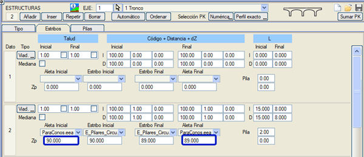
Kanat Duvarları temellerinin kazıklarına, enine ve boyuna düzlemlerde düşeye göre Uç kazık eğimi adı verilen maksimum bir eğim açısı tanımlanabilir. Kazıklar daha sonra yelpaze şeklinde düzenlenir, öyle ki temel merkezinde dikey olurlar ve kenarlarda maksimum açıya ulaşırlar. Demo/Estructuras klasöründe kurulan Estructura_Doble.isa örneğinde, bazı elemanlarda bu eğik kazıklar tanımlanmıştır. 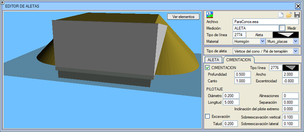
Kapalı Kenarayak Kapalı bir Kenarayak geometrisini oluşturabileceğimiz bir Kanat Duvarı tipimiz vardır: Kenarayak ve yan Kanat Duvarları tek bir temel üzerindedir. Kotlar sabit değerlerle verilebilir veya güzergahtan alınabilir. Toprak işleri temelin tavanına oturur. Programın kurulumuyla birlikte, Istram kütüphanesinde bu tür bir Kanat Duvarı örneği bulunmaktadır. 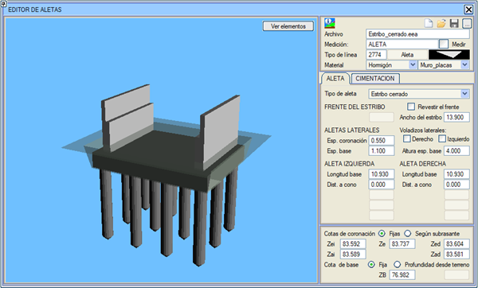
Ön yüzü kapla: ön yüzün kaplanıp kaplanmayacağını seçmek için bayrak. 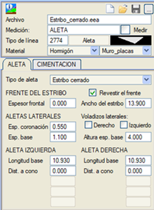Yönelim: Kenarayak ön yüzü
Yan konsollar Kapalı kenarayakların yan kanat duvarlarının kuyruğuna, uzunluk, kalınlık ve alt şev tanımlayarak konsollar ekleme imkanı. 2 konsol, sadece bir tane veya hiç koymamaya izin verilir. 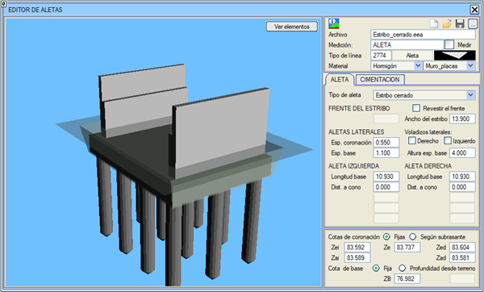
Sol ve Sağ Kanat Duvarı
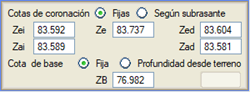 Temel 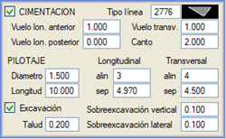 |